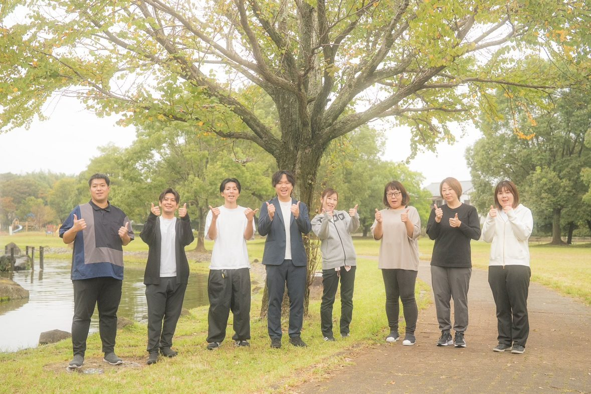
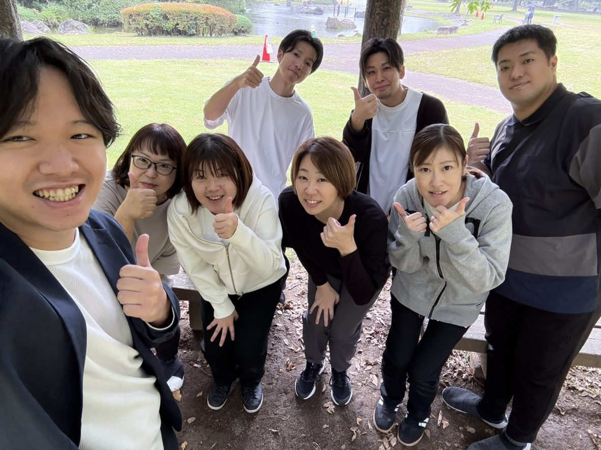
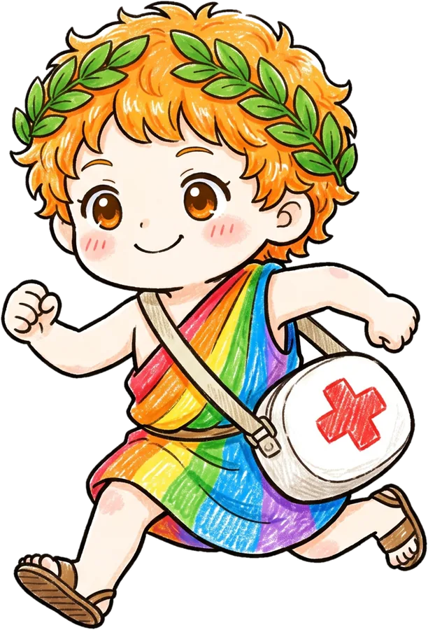
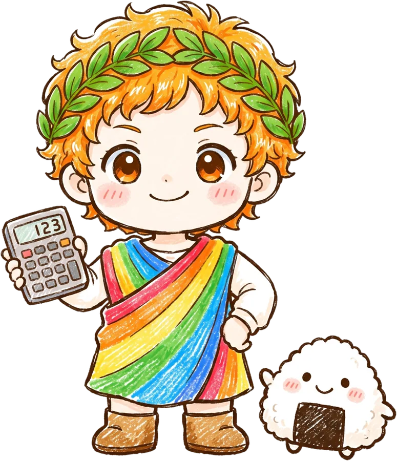
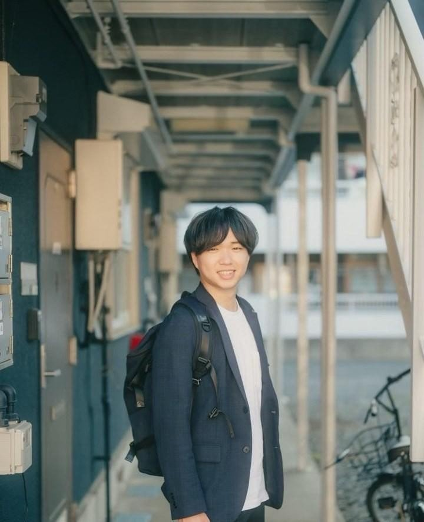
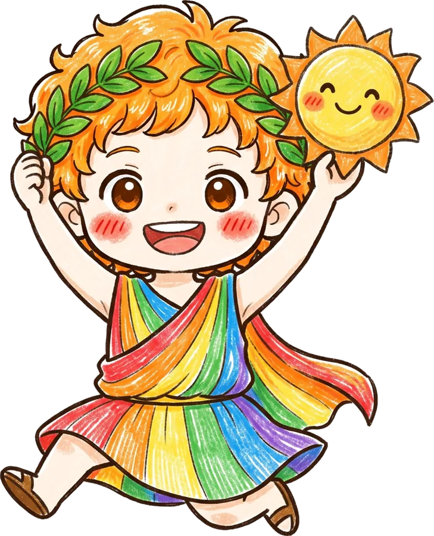

地域に、
小さな太陽を。
人生の最期まで、「自宅で暮らしたい」を選べる地域へ。
訪問介護から始め、3年かけて365日24時間を支える地域拠点へ。
直営店舗の実績
すべて黒字・投資回収済み
初期投資（税別）
加盟金150万円を含む
ロイヤリティ
総売上に対して
3年累計 営業利益（モデル）
初期投資の約6.3倍
※黒字化・投資回収・応募数は直営実績です。初期投資・ロイヤリティは加盟条件、営業利益は一定条件によるシミュレーションであり、成果・収益を保証するものではありません。
直営で証明した数字を、
そのままお渡しします。
直営の実績
3店舗
すべて黒字・投資回収済み
10月 吉川に4店舗目
直営の応募数
15〜20件/月
訪問介護最大の壁「採用」を仕組みで突破
1人あたり月商
77万円
立ち上げ期の62.6万円から、定期巡回で引き上げ（3年目モデル）
3年累計 営業利益
2,791万円
初期投資440万円の約6.3倍（モデル）

机上の計画ではなく、
直営で回してきた「型」を。
本部の直営3店舗はすべて黒字・投資回収済み。採用・営業・請求・教育まで、実際に回している運営の型を、加盟店にそのままお渡しします。
3店舗すべて黒字開業時の投資も回収済み
吉川市に4店舗目がオープン訪問介護＋定期巡回の組み合わせを開始
上尾市で訪問介護を開始（予定）5店舗体制へ
介護は、24時間365日必要です。
いつ介護が必要になるかは、選べません。一日の中でも、急に人の手が必要になる瞬間は何度も訪れます。
起床・排泄の介助
ベッドから起き上がるところから、一日が始まる方がいます。朝の数十分の支えが、その日一日を左右します。
食事・服薬・体調の見守り
一人では食事や服薬が難しい方に、昼の訪問が欠かせません。一日に何度も支援が必要になることは、珍しくありません。
夕食・就寝前の支援
家族が仕事から戻るまでの時間、夕方の訪問が在宅生活の橋渡しになります。
体位変換・緊急のコール
夜間にも介護が必要になったとき、地域に十分なサービスがなければ、「自宅で暮らしたい」という選択肢そのものを諦めなければならない時がきます。
需要はある。でも、
届けられる人が足りない。
在宅介護をめぐる3つの構造的な事実が、この事業の必要性を示しています。
高齢化は、これからが本番
29%超
日本の高齢化率
65歳以上人口は3,600万人を超え、85歳以上の人口は今後さらに増加します。在宅介護のニーズは、2040年代に向けて拡大が続きます。
担い手が、圧倒的に足りない
約15倍
訪問介護員の有効求人倍率
全職業平均の10倍以上という水準で、ヘルパーの高齢化も進んでいます。
供給は、むしろ減っている
過去最多水準
訪問介護事業者の倒産・休廃業
人手不足と経営難で、地域からサービスが消え始めています。
国は施設中心から在宅中心へ方針を移し、訪問介護は地域包括ケアの中核サービスです。
利用者・家族・ケアマネジャー・行政・医療機関と連携し、地域に根を張って運営します。
売上の多くは公的制度に基づく給付で、景気変動の影響を受けにくい構造です。※制度改定・人件費・採用環境への対応は必要です。
※内閣府「高齢社会白書」、厚生労働省公表資料、東京商工リサーチ調査等をもとに本部作成。
訪問介護から始め、3年かけて
365日24時間を支える地域拠点へ。
単純な訪問介護FCではありません。訪問介護で地域の基盤をつくり、採用・営業・請求・組織を安定させたうえで、定期巡回・随時対応型訪問介護看護を段階的に組み込みます。
人生の最期の選択肢を、地域資源が足りないという理由で狭めない。

社会性だけで終わらせず、事業として続く仕組みをつくる。
アポロンケアが選ばれる、3つの理由。
机上の空論ゼロ。
直営で検証したモデル。
直営店を実際に運営している本部です。「こうすれば上手くいくはず」ではなく、実際の介護現場で試したものだけをFC化しています。代表自身は介護業界12年。定期巡回事業を0から2店舗立ち上げ、両店を黒字化し、公募・指定から夜勤、収支管理まで3年間の実務経験があります。

訪問介護最大の壁
「採用」をサポート。
訪問介護は需要があっても、働く人が集まらなければ売上を作れません。直営では月15〜20件程度の応募を継続獲得する仕組みを構築。求人広告を出すだけでなく、応募から面接・採用・定着までをサポートします。

直営の応募数（実績）
月15〜20件
※媒体・地域・時期により変動します。
訪問介護だけで終わらない。
3年間の「統合運営モデル」。
いきなり24時間事業を始めるのではありません。まず訪問介護を立ち上げ、採用・営業・地域連携・請求・組織運営を安定させる。その上で地域・自治体の状況を確認しながら、同じ地域・同じ拠点に定期巡回を組み込みます。

介護保険 × 障害福祉 × 自費。
3つの収益源で基盤をつくる。
別事業を立ち上げるのではなく、同じ職員・同じ事務所・同じ地域基盤で育てる統合運営モデルです。
01 ｜ LONG-TERM CARE
介護保険
高齢者向けの訪問介護サービス。制度に基づく中核の収益源です。
- 身体介護
- 生活援助
- 総合事業 など
02 ｜ DISABILITY WELFARE
障害福祉
障がいのある方への支援。長時間支援・継続利用につながりやすい領域です。
- 居宅介護
- 重度訪問介護
- 移動支援 など
03 ｜ PRIVATE-PAY
自費サービス
制度の枠で対応しきれない、地域の小さな困りごとに応えるサービス。
- 買い物・外出支援
- 生活支援
- 家族支援 など
1人あたり月商 62.6万円 → 77万円。
3年間の成長ロードマップ。
訪問介護を立ち上げ、地域の信頼をつくる。
指定申請から開業、初期の採用・営業を本部と一緒に進めます。常勤換算3名から5名へ体制を広げる立ち上げ期で、12ヶ月目には1人あたり月商71万円を目指します。
- 指定申請・開業準備を本部が伴走
- 採用モデルでヘルパー体制を構築
- ケアマネジャー・地域包括との連携づくり
1年半頃を目安に、定期巡回を追加する。
前半は訪問介護中心に稼働と組織を固め、後半で既存運営に定期巡回を組み込みます。年間平均では訪問介護63.3%／定期巡回36.7%の売上構成です。
- 稼働率と人員体制を最適化
- 定期巡回を追加（公募・指定対応を本部が支援）
- 夜勤体制・オペレーションの構築
定期巡回を丸1年運営し、24時間対応を安定させる。
売上構成は訪問介護30%／定期巡回70%。同じ拠点・同じ人材資源で、365日24時間を支える地域拠点へ。
- 定期巡回53.9万円＋訪問介護23.1万円／人月
- 夜勤の内製化と近隣加盟店でのオペレーター集約
- 統合運営の安定運用フェーズ
※62.6万円／73.5万円／77万円はいずれもモデル値であり、実績を保証するものではありません。
3年で、初期投資の約6.3倍。
3年累計 営業利益（立ち上げ期を含むモデル）
2,791万円
初期投資440万円（税別）は11ヶ月目に累計で回収。12ヶ月目には月商355万円（1人71万円）に届きます。
営業利益の累計（万円） ┅ 初期投資 440万円
| 統合収支（万円） | 1年目 | 2年目 | 3年目 |
|---|---|---|---|
| 売上 | 3,004 | 4,410 | 4,620 |
| 常勤換算（平均） | 4.0名 | 5名 | 5名 |
| 1人あたり月商 | 62.6 | 73.5 | 77 |
| 営業利益 | 549 | 1,130 | 1,113 |
| 営業利益率 | 18.3% | 25.6% | 24.1% |
※一定条件による事業シミュレーションであり、売上・利益・投資回収等を保証するものではありません。累計は端数処理のため表示値の和と1万円ずれます。地域、採用、人員配置、利用者数、加算取得状況その他の条件により結果は変動します。年次の内訳は加盟資料P.14〜15に掲載しています。
小さな太陽を。
ご自身の地域で成立するか、
まず数字を見てみませんか。
- 3年間の収支モデル
- 初期投資の内訳
- 開業までの流れ
- 本部サポートの全体像
公式LINEから資料をお届けします。
施設も、在庫もいらない。
初期投資440万円（税別）から。
初期投資 合計（税別）
440万円
指定申請・開設支援は本部支援内で完結。不動産・大型設備・在庫は不要です。
11ヶ月目に累計回収（モデル）
3年累計2,791万円（約6.3倍）

| 01加盟金 | 150万円 |
| 02敷金・礼金 | 40万円 |
| 03人材採用費 | 50万円 |
| 04什器備品 | 100万円 |
| 05開設前運転費用 | 100万円 |
| 合計（税別） | 440万円 |
ロイヤリティ
総売上5%定期巡回の追加加盟金
0円追加後のロイヤリティ
5%のまま※追加パッケージ費用も0円。定期巡回開始に必要な人件費、車両、通信、夜勤体制その他の通常事業経費は別途発生します。物件条件、地域、採用状況、備品内容等により実際の初期費用は変動します。
開業して終わりにしません。
3年間、一緒に経営します。
訪問介護と定期巡回を分けず、3年間を一つの事業成長として支援します。
開業支援
事業計画・資金計画・物件選定・指定申請・開業前チェックまで。指定申請も本部支援内で進めます。
採用支援
月15〜20件応募モデルの導入、面接資料、定着設計、夜勤採用計画まで。※直近は30件超
営業支援
ケアマネジャー・相談支援・病院・地域包括への営業導線を設計します。
請求・加算指導
カイポケ／ZEST運用、加算取得、返戻対応、月次確認をサポートします。
定期巡回の公募支援強み
市役所・自治体交渉、指定可能性の診断、申請準備まで伴走します。
夜勤体制設計強み
夜勤内製化計画、深夜割増の設計、緊急時対応フローを整えます。
オペレーター集約強み
近隣加盟店との連携、Hub運用、夜間コール受付の設計。
収支管理
統合収支シミュレーション、訪問介護と定期巡回の合算設計。
月次KPI管理
売上・人件費・稼働率・採用状況・生産性を月次で確認します。
近隣加盟店連携
夜勤ローテ、情報共有、エリア設計、人材の相互支援。
加盟契約から開業まで、目安6ヶ月。
- 1
0〜1ヶ月
個別相談・エリア診断・加盟契約
事業説明と無料エリア診断で、地域の可能性を確認したうえで契約します。
- 2
1〜3ヶ月
法人・物件・開業準備
事務所物件の選定、車両・備品の準備、開業計画づくりを本部と進めます。
- 3
3〜5ヶ月
指定申請・採用開始
指定申請を進めながら、採用モデルに沿ってスタッフ採用を開始します。
- 4
5〜6ヶ月
研修・地域営業の立ち上げ
運営の型を研修で引き継ぎ、ケアマネジャーへの挨拶回り・地域連携を始めます。
- 5
6ヶ月〜
開業・伴走スタート
採用・営業・請求・収支管理を本部と定期的に確認しながら稼働を立ち上げます。
その後、1年半頃を一つの目安として定期巡回の追加を進めます。※地域、採用、指定申請、物件等により期間は変動します。
「どこでも必ず定期巡回ができる」
わけではありません。
定期巡回は、好きな地域で自由に開設できるサービスではありません。自治体ごとに整備方針・公募時期・公募枠・既存事業所数・地域ニーズが異なります。だからアポロンケアでは、加盟前に本部が地域ごとの可能性を調べます。
リスクを隠さず、
現場が崩れない経営を。
良いことだけを並べるフランチャイズにはしません。起こりうることと、その備えを先に共有します。
RISK採用不足
COUNTERMEASURE求人原稿・媒体選定・公式LINE導線・面接資料・短時間パート採用・定着施策まで支援します。※応募数は媒体・地域・時期により変動します。
RISK夜勤不足
COUNTERMEASURE夜勤採用計画を先行させ、近隣加盟店との夜勤ローテ、オペレーター集約による負荷分散を設計します。
RISK公募・指定が取れない
COUNTERMEASURE出店希望地ごとに市役所へ事前相談。整備方針・公募予定・地域ニーズを調査し、代替エリアの検討も行います。
RISK利用者獲得の遅れ
COUNTERMEASUREケアマネ・相談支援・病院・地域包括への営業導線を設計。自費・障害福祉との併用契約も推進します。
RISK移動効率の悪化
COUNTERMEASURE同一エリア内のドミナント設計、ルート最適化、受入エリアの絞り込みで移動時間を圧縮します。
RISK随時対応の増加
COUNTERMEASUREオペレーター集約と随時対応フローの整備。利用者の受入ペースと採用スピードを連動させます。
RISK訪問介護とのバランス悪化
COUNTERMEASURE1人あたり月77万円を生産性の上限目安として管理し、訪問介護・定期巡回の売上構成を月次で確認します。
RISK管理者への負荷集中
COUNTERMEASUREサービス提供責任者の複数名体制、業務分解、管理者の訪問割合の可視化で、管理者依存を防ぎます。
こんな経営者・法人に向いています。
TYPE A ／ 領域拡張型
介護・福祉事業者
「デイや施設はやっている。次は在宅・24時間の領域へ広げたい」
- 既存の人材・地域連携がそのまま活きる
- 法人全体のサービスラインが広がる
- 定期巡回まで見据えた成長設計ができる
TYPE B ／ 事業多角化型
異業種の経営者
「地域に必要とされ、長く続く事業を持ちたい」
- 直営で検証済みの運営の型からスタート
- 施設・在庫を持たないアセットライト型
- 採用から請求まで本部が伴走
TYPE C ／ 理念実現型
現場出身の独立
「現場で感じた『足りない』を、自分の事業所で変えたい」
- ヘルパー・サ責・ケアマネ経験が武器になる
- 開業準備から経営数値まで本部が支援
- 地域の「最後まで在宅」を支える側に
子供の頃にもらった希望を、
今度は自分が届ける側に。

代表・大西晃志は、幼少期に母親が不在がちな家庭環境で育ちました。それでも将来に希望を持つことができたのは、周囲の大人たちが温かく関わってくれたからです。
「あの時、自分に希望をくれた大人たちのように、今度は自分が地域や次の世代へ希望を届ける側になりたい。」
その想いが、株式会社solmano、そしてアポロンケアの原点です。私たちが目指しているのは、単に訪問介護事業所の数を増やすことではありません。
地域に、安心して頼れる大人と、
介護のインフラを増やすこと。
志だけでは続きません。事業として成立するからこそ、地域に残せる。この両立が、アポロンケアです。
よくあるご質問。
介護業界が未経験でも加盟できますか？
可能です。直営で検証した運営の型と本部の伴走を前提にしています。なお、訪問介護には人員基準（管理者、サービス提供責任者、常勤換算2.5名以上の訪問介護員）があり、有資格者の採用が必要です。採用モデルの提供と採用支援でここを一緒に乗り越えます。
オーナー自身に介護の資格は必要ですか？
オーナー自身の資格は必須ではありません。ただし事業所には、サービス提供責任者（介護福祉士、実務者研修修了者等）の配置が必要です。有資格者の採用も含めて、本部の採用モデルでサポートします。
開業までどのくらいかかりますか？
加盟契約から開業まで、目安6ヶ月です。法人の状況、物件、指定申請、採用の進み方により前後します。個別のスケジュールは事前相談でご提示します。
どの地域でも定期巡回まで進めますか？
いいえ。定期巡回は自治体の整備方針・公募状況により、開設できるかどうかが異なります。だからこそ加盟前に無料エリア診断を実施し、地域ごとの可能性と進め方を先に確認します。
収支モデルの数字は保証されますか？
保証はできません。本ページおよび加盟資料の数値は一定条件によるシミュレーションであり、地域・採用・稼働・加算取得状況等により変動します。前提条件は加盟資料と個別相談で開示しています。
定期巡回を追加するとき、費用はかかりますか？
追加加盟金・追加パッケージ費用は0円で、ロイヤリティも総売上5%のままです。ただし、定期巡回の開始に必要となる人件費、車両、通信、夜勤体制などの通常の事業経費は別途発生します。

あなたの地域に、
小さな太陽を。
まずは、ご自身の地域の数字を見てみませんか。ご相談はすべて無料です。
事業モデル・収支・サポートの全体像を無料でお届けします。
LINEで無料資料を受け取る → FREE 023年間の収支モデル年次の売上・利益の内訳を、前提条件つきでご覧いただけます。
収支モデルを見る → FREE 03無料エリア診断ご自身の地域で成立するか、加盟前に本部が調べます。
地域を診断してもらう →※本ページ内の収支・投資に関する数値は一定条件によるシミュレーションであり、成果・収益を保証するものではありません。